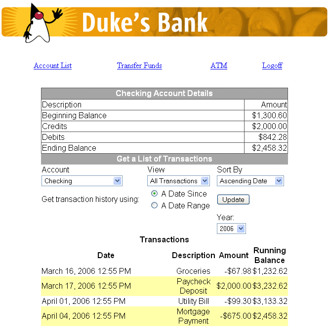

Web Client
In the Duke’s Bank application, the web client is used by customers to access account information and perform operations on accounts. Table 37-2 lists the functions the client supports, the JSP pages the customer uses to perform the functions, and the backing beans ad other JavaBeans components that implement the functions.
Note - The source code for the web client is in the tut-install/javaeetutorial5/examples/dukesbank/dukesbank-war/ directory.
Table 37-2 Web Client
Function |
JSP Pages |
JavaBeans Components |
|---|---|---|
Home page |
main.jsp |
CustomerBean |
Log on to or off of the application |
logon.jsp logonError.jsp logoff.jsp |
CustomerBean |
List accounts |
accountList.jsp |
CustomerBean, AccountHistoryBean |
List the history of an account |
accountHist.jsp |
CustomerBean, AccountHistoryBean |
Transfer funds between accounts |
transferFunds.jsp transferAck.jsp |
CustomerBean, TransferBean |
Withdraw and deposit funds |
atm.jsp atmAck.jsp |
CustomerBean, ATMBean |
Error handling |
error.jsp |
none |
Figure 37-4 shows an account history screen.
Figure 37-4 Account History
Design Strategies
The main job of the JSP pages in the Duke’s Bank application is presentation. They use JavaServer Faces tags to represent UI components on the page, to bind the components to server-side data stored in backing beans, and wire the components to event-handling code. To maintain the separation of presentation and application behavior, most dynamic processing tasks are delegated to enterprise beans, custom tags, and JavaBeans components, including backing beans (see Backing Beans).
In the Duke’s Bank application, the JSP pages rely on backing beans and other JavaBeans components for interactions with the enterprise beans. In the Duke’s Bookstore application, discussed in Chapters Chapter 3, Getting Started with Web Applications to Including the Classes, Pages, and Other Resources, the BookDB JavaBeans component acts as a front end to a database.
In the Duke’s Bank application, CustomerBean acts as a facade to the enterprise beans. Through it, the backing beans can invoke methods on the enterprise beans. For example, TransferFundsBean can indirectly invoke the transferFunds method of the TxControllerBean enterprise bean by first calling getTxController on CustomerBean then calling transferFunds on the TxController interface.
The other backing beans have much richer functionality. ATMBean sets acknowledgment strings according to customer input, and AccountHistoryBean massages the data returned from the enterprise beans in order to present the view of the data required by the customer.
The web client uses a template mechanism implemented by custom tags (discussed in A Template Tag Library) to maintain a common look across all the JSP pages. The template mechanism consists of three components:
template.jsp determines the structure of each screen. It uses the insert tag to compose a screen from subcomponents.
screendefinitions.jspf defines the subcomponents used by each screen. All screens have the same banner, but different title and body content (specified in the JSP Pages column in Table 37-2).
Finally, the web client uses logic tags from the JSTL core tag library to perform flow control and tags from the JSTL fmt tag library to localize messages and format currency.
Client Components
All the JavaBeans components used in the web client are instantiated by the managed bean facility (see Configuring a Bean) when they are encountered in the page, such as when an EL expression references the component. The managed bean facility is configured in the faces-config.xml file. The following managed-bean elements from the faces-config.xml file specify how AccountHistoryBean and CustomerBean are to be instantiated and stored in scope:
<managed-bean>
<managed-bean-name>accountHistoryBean</managed-bean-name>
<managed-bean-class>
com.sun.tutorial.javaee.dukesbank.web.AccountHistoryBean
</managed-bean-class>
<managed-bean-scope>request</managed-bean-scope>
...
<managed-property>
<property-name>accountId</property-name>
<value>#{param.accountId}</value>
</managed-property>
<managed-property>
...
</managed-bean>
<managed-bean>
<managed-bean-name>customerBean</managed-bean-name>
<managed-bean-class>
com.sun.tutorial.javaee.dukesbank.web.CustomerBean
</managed-bean-class>
<managed-bean-scope>session</managed-bean-scope>
</managed-bean>As shown by the preceding configurations, an AccountHistoryBean instance is saved into request scope under the name accountHistoryBean, and a CustomerBean instance is saved into session scope under the name customerBean. EL expressions use these names to reference the beans from a page. The managed bean configurations can also initialize bean properties with values. As shown in the preceding configuration, the accountId property of AccountHistoryBean is set to the expression #{param.accountId} when an instance of AccountHistoryBean is created. This expression references the accountId variable in the request parameter map. This is so that other pages in the application can pass the account ID to AccountHistoryBean and therefore make it available to the accountHist.jsp page.
Responsibility for managing the enterprise beans used by the web client rests with CustomerBean. It creates account and transaction controller enterprise beans and provides methods for retrieving the beans.
When instantiated, the CustomerBean component uses @EJB annotations to inject references to the enterprise beans. Because these enterprise beans apply to a particular customer or session, CustomerBean is stored in session.
public class CustomerBean {
@EJB
private AccountController accountController;
@EJB
private TxController txController;
...
}CustomerBean also does the following:
Maintains the customer ID
Retrieves the list of accounts from the database
Gets detailed information about a particular account
Invalidates a session to allow a customer to log out.
Because CustomerBean is in session, it is a convenient place to keep account information so that the backing beans and their associated pages can pass this information between themselves.
The page fragment template/links.jsp generates the list of bank function links at the top of every page. Notice that the customer is retrieved from the userPrincipal object, which is set when the customer logs in (see Protecting the Web Client Resources). After the customer is set, the page can retrieve the collection of accounts from CustomerBean.
As shown by the following code from links.jsp, the ID of the first account in the collection of accounts is set into request scope. The setPropertyActionListener tag is nested inside the commandLink tag, which represents the hyperlink that launches the atm.jsp page. This setPropertyActionListener tag causes the account ID to be set in request scope when the hyperlink is clicked.
...
<c:set var="accountId" scope="request"
value="${customerBean.accounts[0].accountId}"/>
<h:commandLink value="#{bundle.ATM}" action="atm">
<f:setPropertyActionListener
target="#{requestScope.accountId}"
value="#{customerBean.accounts[0].accountId}"/>
</h:commandLink>
...
Request Processing
When a user clicks on a button or a hyperlink, the application navigates to a new page or reloads the current page. Navigation to all pages listed in Table 37-2 is configured in the web/WEB-INF/faces-config.xml file using a set of navigation rules.
As described in Configuring Navigation Rules, the JavaServer Faces navigation mechanism matches a logical outcome String or an action method to one of the navigation rules to determine which page to open next. The button or hyperlink that the user clicks specifies the logical outcome String or action method with its action attribute.
Although it’s not necessary to do so, the web client of Duke’s Bank uses an Java SE Enum class to encapsulate all the possible logical outcomes for the application:
public enum Navigation {
main,
accountHist,
accountList,
atm,
atmAck,
transferFunds,
transferAck,
error,
logout;
public Object action() {
return this;
}
}If you are not familiar with enums, see http://java.sun.com/javase/6/docs/technotes/guides/language/enums.html.
A managed bean is needed to expose the enum to the expression language so that a page can access its logical outcomes. In this case, the Navigation enum class is accessed through the NavigationEnumBean:
public class NavigationEnumBean extends EnumManagedBean {
public NavigationEnumBean() {
super(Util.Navigation.class);
}
}NavigationEnumBean extends a special bean class that includes a method to return an enum constant, which represents a logical outcome:
public Enum getEnum(String enumName) {
return Enum.valueOf(e, enumName);
}The application also includes a custom EL resolver, EnumResolver, which resolves expressions that reference an instance of this bean class. You create a resolver if you want expressions to particular kinds of objects resolved in a special way that is not already supported by the EL mechanism. See Resolving Expressions for more information on EL resolvers.
The resolver calls the bean’s getEnum method from its getValue method to return the enum constant:
public Object getValue(ELContext elContext, Object base, Object property) {
if ((base != null && property != null)
&& base instanceof EnumManagedBean) {
elContext.setPropertyResolved(true);
return
((EnumManagedBean)base)
.getEnum(property.toString());
}
return null;
}A tag’s action attribute references a particular constant of the enum to specify a logical outcome. The following commandLink tag appears on the links.jsp page:
<h:commandLink value="#{bundle.Logoff}"
action="#{navigation.logout.action}"/>The action attribute has the expression #{navigation.logout.action} to invoke the action method of the Navigation enum. This returns the enum constant, representing the logical outcome, logout.
The following piece of a navigation rule configuration in the faces-config.xml file corresponds to the action attribute expression of the preceding commandLink tag. It causes the logoff.jsp page to open if the logout logical outcome is returned.
<navigation-rule>
...
<navigation-case>
<description>
Any action that returns "logout" should go to the
logoff page and invalidate the session.
</description>
<from-action>logout</from-action>
<to-view-id>/logoff.jsp</to-view-id>
</navigation-rule>When a page in the application is rendered, it is constructed with the aid of a template mechanism. Every page includes the template.jsp page, which in turn includes certain subcomponents, such as banner.jsp, into the page depending on which page is being rendered. The screendefinitions.jspf page, included in template.jsp, determines which page to render based on the current view ID, which identifies the UI component tree that represents the page to be rendered. The screendefinitions.jspf page accesses the view ID with this expression from its definition tag:
<tt:definition name="bank"
screen="${facesContext.viewRoot.viewId}">Based on the view ID, the templating mechanism will include specific components into the page.
Protecting the Web Client Resources
In the JavaEE platform, you protect a web resource from anonymous access by specifying which security roles can access the resource. The web container guarantees that only certain users acting in those roles can access the resource. For the web container to enforce the security constraint, the application must specify a means for users to identify themselves, and the web container must support mapping a role to a user.
In the Duke’s Bank web client, you restrict all the URLs listed in Table 37-2 to the security role bankCustomer. The application requires users to identify themselves by means of the form-based login mechanism. When a customer tries to access a web client URL and has not been authenticated, the web container displays the JSP page logon.jsp. This page contains an HTML form that requires a customer to enter an identifier and password. This form is rendered by a JavaServer Faces custom component. A custom tag represents the component on the page. In the following piece of logon.jsp, the <db:formBasedLogin> tag represents the custom component:
<f:view>
...
<h:outputText value="#{bundle.Logon}"/>
<h:outputText value="#{bundle.Submit}"/>.</h3>
<br><br>
<db:formBasedLogin />
</f:view>Note that there is no h:form tag. This is because the custom component renders the form tag along with the complete HTML form that customers use to log in:
<form action="j_security_check" method=post>
<table>
<tr>
<td align="center" >
<table border="0">
<tr>
<td><b><fmt:message key="CustomerId"/></b></td>
<td>
<input type="text" size="15" name="j_username">
</td>
</tr>
<tr>
<td><b><fmt:message key="Password"/></b></td>
<td>
<input type="password" size="15" name="j_password">
</td>
...
</form>Note that the action invoked by the form, j_security_check, is specified by the Java Servlet specification, as are the request parameters j_username and j_password. The web container retrieves this information, maps it to a security role, and verifies that the role matches that specified in the security constraint. In order for the web container to check the validity of the authentication information and perform the mapping, you must perform these two steps when you deploy the application:
Add the customer’s group, ID, and password to the default realm of the container using the Admin Console.
Map the bankCustomer role to the customer or the customer’s group in the deployment descriptor.
After the customer has been authenticated, the identifier provided by the customer is used as a key to identify the customer’s accounts. The identifier is retrieved from the FacesContext object by the CustomerBean constructor, which saves it into the customerId property:
customerId = Long.parseLong(FacesContext.getCurrentInstance()
.getExternalContext().getUserPrincipal().getName());